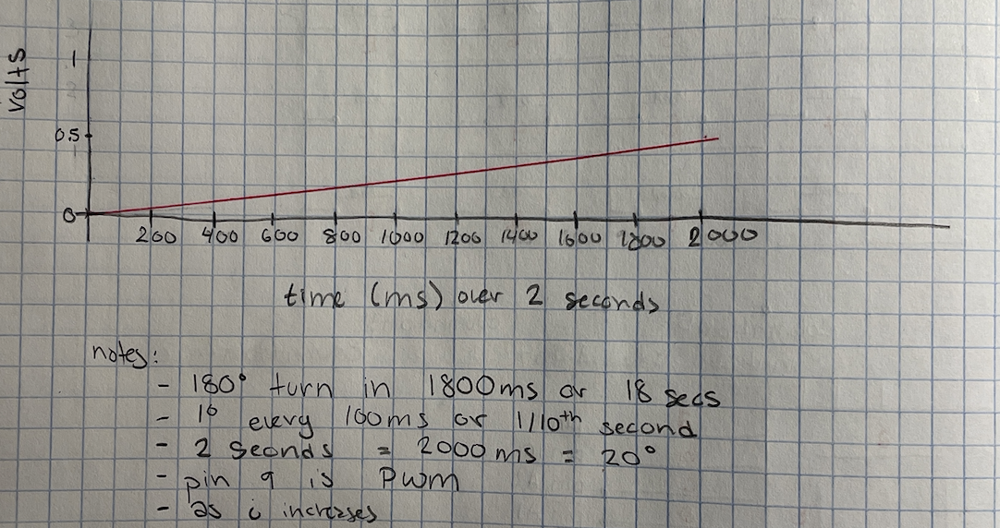

Mai Li's Assignment 4!
Overview:
Unlike the past assignments, I didn't linearly go through the steps. In class, we just don't have time to go through
everything that uses libraries that are in the Arduino kit. I first wrote out the requirements, already having an
idea of what I wanted to use: the membrane keypad and a single 7-digit display; however I didn't know how or even
if it was possible to connect the two.
Knowing what I wanted, I first took some advice I got in class: understand the two items separately, before putting
them together. I searched through Youtube to try to find some introduction videos on the keypad and the display.
I found a man that was really good at explaining the keypad, hooking it to a LCD. I didn't want to hook it
up to a light crystal display, so I went looking for an explaination on how to set up a 7-digit display as well. I
found the same guy talking about this item too and started learning!
Membrane Keypad Video: https://www.youtube.com/watch?v=vl1-R6NsejM
7-Digit Display Video: https://www.youtube.com/watch?v=6XY9PooMrms
After, I felt a little disappointed because both these items use 7 or 8 pins on the Arduino, but I only have 14
digital pins. I wondered if I could use some of the anaglog in pins for the keypad, but I didn't want to try it
before some more research into it. I searched for a while, looking at StackExchange and other web forums, such as the
Arduino Forum.
This is when I found someone doing exactly what I wanted and I watched him using three of the analog pins for the display.
I didn't like the entire video and I used a combination of the resources linked above to create this circuit. I also tried
reversing the pins; the keypad has the three extra analog input pins. I did this because the keypad is the input for the
circuit, so I thought it would make more sense that they could use the analog-in pins. However, changing the code and
the pins didn't light up the display or even print in the serial monitor, so I went back to the display using the
analog pins.
Membrane Keypad + 7-Digit Display Video: https://www.youtube.com/watch?v=HjBOjK1H9vM
A4: Libraries! circuit photo. Resistance amount is explained below.
Resistance Use
Gif and Code Explanation:
Since I didn't know how these items worked, I also didn't know the functions they have either, which is why I also
followed the videos to come up with the code used. I didn't write all of it myself, but I did change parts of it
when it wouldn't work since I was using the 7-digit display with the keypad.
I also treated as learning exercise, adding comments when I wasn't sure what it would do and then going back to change
the comment when I figured out what it was.

A4: Libraries! gif showing the numbers pressed and changed display for each.
// Mai Li Jorgensen
// HCDE 439
// A4: Libraries!
// add the library for the keypad
#include < Keypad.h >
// add the seven digit library
#include "SevSeg.h"
// add the rows and column numbers for the keypad
const byte row = 4;
const byte column = 4;
// make an array that codes to the buttons on the keypad
// the inputs will be strings?
// the outputs will be the string
char keys[row][column] = {
{'1', '2', '3', 'A'},
{'4', '5', '6', 'B'},
{'7', '8', '9', 'C'},
{'*', '0', '#', 'D'}
};
// array for the pin connections for each row and column
byte rowPins[row] = {9, 8, 7, 6};
byte columnPins[column] = {5, 4, 3, 2};
// make the keypad from the library
// passes in the array of button outputs, the pins each row & column are connected to, and the amount of rows and columns
// (basically everything defined above)
Keypad customKeypad = Keypad(makeKeymap(keys), rowPins, columnPins, row, column);
// create a sevseg object for the display
SevSeg sevseg;
// number of digits used, this is a single one
byte digit = 1;
// which display is used (only used when there is more than one digit)
// but I still need to define it?
byte digitPin = {};
// which pins are connected to each of the digits
// order: A, B, C, D, E, F, G, DP (didn't connect a wire for DP)
byte segmentPins[] = {11, 10, A2, A1, A0, 12, 13};
// what display is it
byte configure = COMMON_CATHODE;
// initialize the number passed to the display
int num = 0;
void setup() {
// add the serial monitor to see the output on the screen
// add the pins for the display as outputs
Serial.begin(9600);
pinMode(11, OUTPUT);
pinMode(10, OUTPUT);
pinMode(A0, OUTPUT);
pinMode(A1, OUTPUT);
pinMode(A2, OUTPUT);
pinMode(12, OUTPUT);
pinMode(13, OUTPUT);
// start the display with everything defined for it above
sevseg.begin(configure, digit, digitPin, segmentPins, 1);
// added brightness when screen was really low
sevseg.setBrightness(90);
}
void loop() {
// save the value when a button is pressed using the defined values
char key = customKeypad.getKey();
// change the character to an number for the output
num = (key - '0');
// does the key exist? if it does print in the serial monitor
if (key) {
Serial.println(key);
// add the number to the display and refresh, print it out again with the new number
sevseg.setNumber(num);
sevseg.refreshDisplay();
delay(50);
}
}
Additional Questions:
1: Say you are using a servo motor you attach to pin 9. Draw a graph with the X axis in
seconds, for two seconds, and the y-axis the voltage at pin 9 with respect to ground. In your loop() you have the following
code:
for (int i=0, i<180, i++) {
servo.write(i);
delay(100);
}

I tired to logic my way through this question, but I didn't quite understand, in the time frame, how 5V and 0V jumped
up and down. Instead, I used my multi-meter to measure between pin 9 and ground in the circuit. I first tried to build
it just to see if visualizing what the servo would do with the code, but it didn't help me understand it completely.
What I saw on the multi-meter was that in the first 2 seconds of the loop, the volts never reached above 1V but didn't
decrease either. I don't think it was as linear as my graph, but 2 seconds is really quick and I couldn't totally
diecipher what amount of volts were occuring in the time frame. The graph is my best estimate.
2: Your input device is slightly broken, leading it to give us an erroneous reading 1% of the
time. How can we address this? Answer in (pseudo)code.
The membrane keypad handles these errors differently than other kinds of sensors. It can read a button press when
there isn't one hit or it can not detect a press when there is a button pressed. To be accurate, the best way would
be to get multiple comfirmations that a button was pressed before continuing.
wait_time = 50ms
WHILE true (arbitrary time frame)
IF button1 == PRESSED
button_state = True
PAUSE wait_time
IF button2 == PRESSED (still)
IF button2 == button 1
button_state = True
CONTINUE with button pressed action
3: Your input device is slightly noisy, leading the measurement to randomly deviate from the
true measurement up or down by 10%. How can we address this? Answer in (pseudo)code.
Again, the membrane keypad doesn't generally have a bunch of noise, but can be faulty due to wiring. So waiting longer
periods of time to see if the button is still pressed may help calibrate the keypad before use. As well as adding
amount of times it must be successful before it proceeds.
wait_time = 75ms
WHILE true (arbitrary time frame - maybe five times success is achieved in a row)
IF button1 == PRESSED
button_state = True
PAUSE wait_time
IF button2 == PRESSED (still)
IF button1 == button2
key_state = True
ELSE
key_state = False
IF key_state = True
success = +1
RETURN to WHILE loop
ELSE
END (restart)
IF success = 5
CONTINUE to program